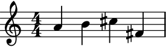
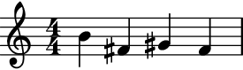
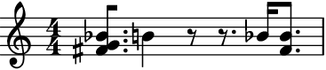
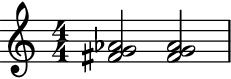
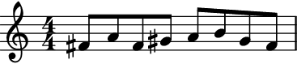
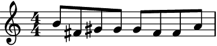
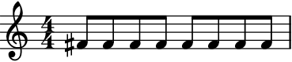
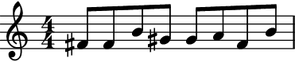
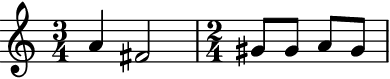
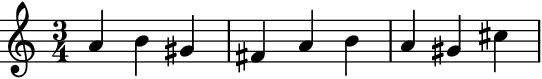

auxjad.PitchRandomiser¶
-
class
auxjad.PitchRandomiser(contents: abjad.core.Container.Container, pitches: Union[list, tuple, str, abjad.pitch.PitchSegment.PitchSegment], *, weights: Optional[list] = None, omit_time_signatures: bool = False, process_on_first_call: bool = True, use_tenney_selector: bool = False)¶ This class takes an input
abjad.Container(or child class) and a series of pitches and randomises the container’s pitches using that list. The pitches can be of typelist,tuple,str, orabjad.PitchSegment.- Example:
Calling the object will output a selection of the input container with randomised pitches. Pitches are randomly selected from
pitches.>>> container = abjad.Container(r"\time 4/4 c'4 d'4 e'4 f'4") >>> pitches = r"fs' gs' a' b' cs''" >>> randomiser = auxjad.PitchRandomiser(container, ... pitches, ... ) >>> notes = randomiser() >>> staff = abjad.Staff(notes) >>> abjad.f(staff) \new Staff { \time 4/4 a'4 b'4 cs''4 fs'4 }
>>> notes = randomiser() >>> staff = abjad.Staff(notes) >>> abjad.f(staff) \new Staff { \time 4/4 b'4 b'4 b'4 fs'4 }

To get the result of the last operation, use the property
current_window.>>> notes = randomiser.current_window >>> staff = abjad.Staff(notes) >>> abjad.f(staff) \new Staff { \time 4/4 b'4 b'4 b'4 fs'4 }
Warning
Unlike the other classes in Auxjad, the very first call of this class will already process the initial container. To disable this behaviour and output the initial container once before randomising its pitches, initialise the class with the keyword argument
process_on_first_callset toFalse.>>> container = abjad.Container(r"c'4 d'4 e'4 f'4") >>> pitches = r"fs' gs' a' b'" >>> randomiser = auxjad.PitchRandomiser(container, ... pitches, ... process_on_first_call=False, ... ) >>> notes = randomiser() >>> staff = abjad.Staff(notes) >>> abjad.f(staff) \new Staff { c'4 d'4 e'4 f'4 }

>>> notes = randomiser() >>> staff = abjad.Staff(notes) >>> abjad.f(staff) \new Staff { b'4 fs'4 gs'4 fs'4 }
- Example:
Applying the
len()function to the randomiser will return the number of pitches inpitches.>>> container = abjad.Container(r"c'4 d'4 e'4 f'4") >>> pitches = r"fs' gs' a' b'" >>> randomiser = auxjad.PitchRandomiser(container, ... pitches, ... ) >>> len(randomiser) 4
>>> container = abjad.Container(r"c'4 d'4 e'4 f'4") >>> pitches = [6, 7, 8, 9, 10, 11, 12] >>> randomiser = auxjad.PitchRandomiser(container, ... pitches, ... ) >>> len(randomiser) 7
- Example:
This class has many keyword arguments, all of which can be altered after instantiation using properties with the same names as shown below.
weightstakes a list ofint’s orfloat’s representing the weight of each pitch frompitches(their lengthes must also match).omit_time_signatureswill remove all time signatures from the output (both areFalseby default).process_on_first_calltoTrueand the random pitch process will be applied on the very first call. Settinguse_tenney_selectortoTruewill make the randomiser useauxjad.TenneySelectorfor the random selection instead ofrandom.choices()(default isFalse).>>> container = abjad.Container(r"c'4 d'4 e'4 f'4") >>> randomiser = auxjad.PitchRandomiser( ... container, ... pitches=r"a b cs' ds' e'", ... weights=[1.0, 2.0, 1.0, 1.5, 1.3], ... omit_time_signatures=True, ... process_on_first_call=True, ... use_tenney_selector=True, ... ) >>> randomiser.pitches <a b cs' ds' e'> >>> randomiser.weights [1.0, 2.0, 1.0, 1.5, 1.3] >>> randomiser.omit_time_signatures True >>> randomiser.process_on_first_call True >>> randomiser.use_tenney_selector True
Use the properties below to change these values after initialisation.
>>> randomiser.pitches = abjad.PitchSegment(r"c' d' e' f'") >>> randomiser.weights = [1, 2, 5, 8] >>> randomiser.omit_time_signatures = False >>> randomiser.process_on_first_call = False >>> randomiser.use_tenney_selector = False >>> assert randomiser.pitches <c' d' e' f'> >>> assert randomiser.weights [1, 2, 5, 8] >>> randomiser.omit_time_signatures False >>> randomiser.process_on_first_call False >>> randomiser.use_tenney_selector False
- Example:
Only pitched logical ties are randomised, rests are left untouched.
>>> container = abjad.Container(r"c'8. d'4 r8 r8. e'16 f'8.") >>> pitches = [6, 7, 8, 9, 10, 11] >>> randomiser = auxjad.PitchRandomiser(container, ... pitches, ... ) >>> notes = randomiser() >>> staff = abjad.Staff(notes) >>> abjad.f(staff) \new Staff { bf'8. af'4 r8 r8. bf'16 a'8. }
- Example:
Each note of a chord is randomised too.
>>> container = abjad.Container( ... r"<c' e' g'>8. d'4 r8 r8. e'16 <f' a'>8.") >>> pitches = [6, 7, 8, 9, 10, 11] >>> randomiser = auxjad.PitchRandomiser(container, ... pitches, ... ) >>> notes = randomiser() >>> staff = abjad.Staff(notes) >>> abjad.f(staff) \new Staff { <fs' g' bf'>8. b'4 r8 r8. bf'16 <fs' bf'>8. }
The number of note heads in a chord stay the same unless there are fewer pitches available in
pitches.>>> container = abjad.Container( ... r"<c' e' g' a'>2 <cs' ds' e' f' g' a' b'>2") >>> pitches = [6, 7, 8] >>> randomiser = auxjad.PitchRandomiser(container, ... pitches, ... ) >>> notes = randomiser() >>> staff = abjad.Staff(notes) >>> abjad.f(staff) \new Staff { <fs' g' af'>2 <fs' g' af'>2 }
- Example:
Setting
use_tenney_selectortoTruewill make the randomiser useauxjad.TenneySelectorfor the random selection instead ofrandom.choices()(default isFalse).auxjad.TenneySelectorwill raise the chance of a pitch being selected the longer it hasn’t been selected, and will forbid immediate repetitions of pitches. See its documentation for more information.>>> container = abjad.Container(r"c'8 d'8 e'8 f'8 g'8 a'8 b'8 c'8") >>> pitches = r"fs' gs' a' b'" >>> randomiser = auxjad.PitchRandomiser(container, ... pitches, ... use_tenney_selector=True, ... ) >>> notes = randomiser() >>> staff = abjad.Staff(notes) >>> abjad.f(staff) \new Staff { fs'8 a'8 fs'8 gs'8 a'8 b'8 gs'8 fs'8 }
- Example:
Individual pitches can have different weights, defined by the
weightsproperty. It takes alistoffloat’s orint’s.>>> container = abjad.Container(r"c'8 d'8 e'8 f'8 g'8 a'8 b'8 c'8") >>> pitches = r"fs' gs' a' b'" >>> randomiser = auxjad.PitchRandomiser(container, ... pitches, ... weights=[5.0, 2.0, 1.5, 1.0], ... ) >>> notes = randomiser() >>> staff = abjad.Staff(notes) >>> abjad.f(staff) \new Staff { b'8 fs'8 gs'8 gs'8 gs'8 fs'8 fs'8 a'8 }
- Example:
Non-uniform
weightscan also be used whenuse_tenney_selectoris set toTrue.>>> container = abjad.Container(r"c'8 d'8 e'8 f'8 g'8 a'8 b'8 c'8") >>> pitches = r"fs' gs' a' b'" >>> randomiser = auxjad.PitchRandomiser(container, ... pitches, ... weights=[5.0, 2.0, 1.5, 1.0], ... use_tenney_selector=True, ... ) >>> notes = randomiser() >>> staff = abjad.Staff(notes) >>> abjad.f(staff) \new Staff { fs'8 gs'8 a'8 fs'8 gs'8 a'8 gs'8 b'8 }
- Example:
Setting the weights to
Nonewill reset it back to a uniform distribution.>>> container = abjad.Container(r"c'8 d'8 e'8 f'8 g'8 a'8 b'8 c'8") >>> pitches = r"fs' gs' a' b'" >>> randomiser = auxjad.PitchRandomiser(container, ... pitches, ... weights=[100.0, 1.0, 1.0, 1.0], ... ) >>> notes = randomiser() >>> staff = abjad.Staff(notes) >>> abjad.f(staff) \new Staff { fs'8 fs'8 fs'8 fs'8 fs'8 fs'8 fs'8 fs'8 }
>>> randomiser.weights = None >>> notes = randomiser() >>> staff = abjad.Staff(notes) >>> abjad.f(staff) \new Staff { fs'8 fs'8 b'8 gs'8 gs'8 a'8 fs'8 b'8 }
- Example:
When using a custom list of
weights, changing thepitchesto a series of new values with the same length will preserve theweightsvalues. If on the other handpitcheschanges in length,weightsis reset toNone(i.e. uniform distribution).>>> container = abjad.Container(r"c'8 d'8 e'8 f'8 g'8 a'8 b'8 c'8") >>> pitches = r"fs' gs' a' b'" >>> randomiser = auxjad.PitchRandomiser(container, ... pitches, ... weights=[100.0, 1.0, 1.0, 1.0], ... ) >>> randomiser.pitches = r"c'' d'' e'' f''" >>> randomiser.pitches <c'' d'' e'' f''> >>> randomiser.weights [100.0, 1.0, 1.0, 1.0] >>> randomiser.pitches = r"c'' d'' e'' f'' g'' a'' b''" >>> randomiser.pitches <c'' d'' e'' f'' g'' a'' b''> >>> randomiser.weights None
Error
Note that
weightsmust always have the same length aspitches.>>> container = abjad.Container(r"c'4 d'4 e'4 f'4") >>> pitches = r"fs' gs' a' b'" >>> weights = [1, 1, 5, 2, 3, 4, 8] >>> auxjad.PitchRandomiser(container, pitches, weights=weights) ValueError: 'weights' must have the same length as 'pitches'
- Example:
To output several randomised containers at once, use the method
output_n(), inputting the desired number of iterations.>>> container = abjad.Container(r"c'4 ~ c'16 r8. d'4 e'8. r16") >>> pitches = [6, 7, 8, 9, 10] >>> randomiser = auxjad.PitchRandomiser(container, ... pitches, ... ) >>> notes = randomiser.output_n(3) >>> staff = abjad.Staff(notes) >>> abjad.f(staff) \new Staff { a'4 ~ a'16 r8. g'4 fs'8. r16 g'4 ~ g'16 r8. g'4 fs'8. r16 bf'4 ~ bf'16 r8. a'4 af'8. r16 }
- Example:
This class preserves indicators.
>>> container = abjad.Container( ... r"c'4\p\< ~ c'8. d'16-.\f e'4--\pp f'8.( g'16)") >>> pitches = [6, 7, 8, 9, 10, 11, 12] >>> randomiser = auxjad.PitchRandomiser(container, ... pitches, ... ) >>> notes = randomiser() >>> staff = abjad.Staff(notes) >>> abjad.f(staff) \new Staff { a'4 \p \< ~ a'8. c''16 \f - \staccato af'4 \pp - \tenuto a'8. ( bf'16 ) }
- Example:
This class also preserves the time signature structure.
>>> container = abjad.Container( ... r"\time 3/4 c'4 d'2 \time 2/4 e'8 f'8 g'8 a'8") >>> pitches = r"fs' gs' a' b'" >>> randomiser = auxjad.PitchRandomiser(container, ... pitches, ... ) >>> notes = randomiser() >>> staff = abjad.Staff(notes) >>> abjad.f(staff) \new Staff { \time 3/4 a'4 fs'2 \time 2/4 gs'8 gs'8 a'8 gs'8 }
- Example:
To omit time signatures altogether, set
omit_time_signaturestoTrue(default isFalse).>>> container = abjad.Container( ... r"\time 3/4 c'4 d'2 \time 2/4 e'8 f'8 g'8 a'8") >>> pitches = r"fs' gs' a' b'" >>> randomiser = auxjad.PitchRandomiser(container, ... pitches, ... omit_time_signatures=True, ... ) >>> notes = randomiser() >>> staff = abjad.Staff(notes) >>> abjad.f(staff) \new Staff { a'4 fs'2 gs'8 gs'8 a'8 gs'8 }
- Example:
The instances of this class can also be used as an iterator, which can then be used in a for loop. Note that unlike the method
output_n(), time signatures are added to each window returned by the randomiser. Use the functionauxjad.remove_repeated_time_signatures()to clean the output when using this class in this way. It is also important to note that abreakstatement is needed when using this class as an iterator. The reason is that pitch randomisation is a process that can happen indefinitely (unlike some of the other classes in this library).>>> container = abjad.Container(r"\time 3/4 c'4 d'4 e'4") >>> pitches = r"fs' gs' a' b' cs''" >>> randomiser = auxjad.PitchRandomiser(container, ... pitches, ... ) >>> staff = abjad.Staff() >>> for window in randomiser: ... staff.append(window) ... if abjad.inspect(staff).duration() == abjad.Duration((9, 4)): ... break >>> auxjad.remove_repeated_time_signatures(staff) >>> abjad.f(staff) \new Staff { \time 3/4 a'4 b'4 gs'4 fs'4 a'4 b'4 a'4 gs'4 cs''4 }

Tip
The functions
auxjad.remove_repeated_dynamics()andauxjad.reposition_clefs()can be used to clean the output and remove repeated dynamics and unnecessary clef changes.Methods
__call__()Calls the randomise process, returning an
abjad.Selection__init__(contents, pitches, *[, weights, …])Initialises self.
__iter__()Returns an iterator, allowing instances to be used as iterators.
__len__()Returns the number of available
pitches.__next__()Calls the randomise process for one iteration, returning an
abjad.Selection.__repr__()Returns interpreter representation of
pitches.output_n(n)Goes through
niterations of the pitch randomisation process and outputs a singleabjad.Selection.Attributes
contentsThe
abjad.Containerto be shuffled.current_windowRead-only property, returns the result of the last operation.
omit_time_signaturesWhen
True, the output will contain no time signatures.pitchesPitches available for the randomiser.
process_on_first_callIf
Truethen thecontentswill be processed in the very first call.use_tenney_selectorIf
Truethen the pitches will be selected usingTenneySelector, otherwise they are chosen using a uniform random distribution.weightsThe
listwith weights for each element ofpitches